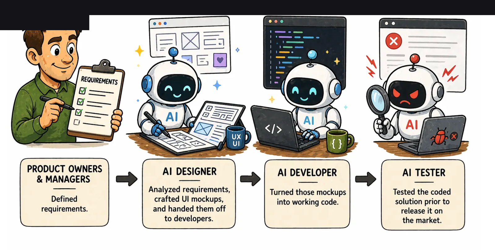
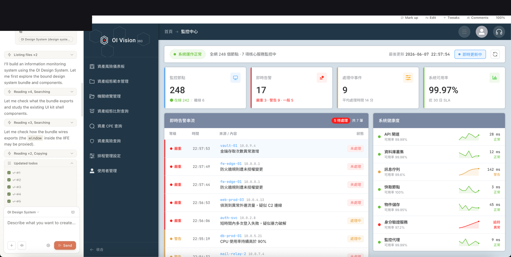
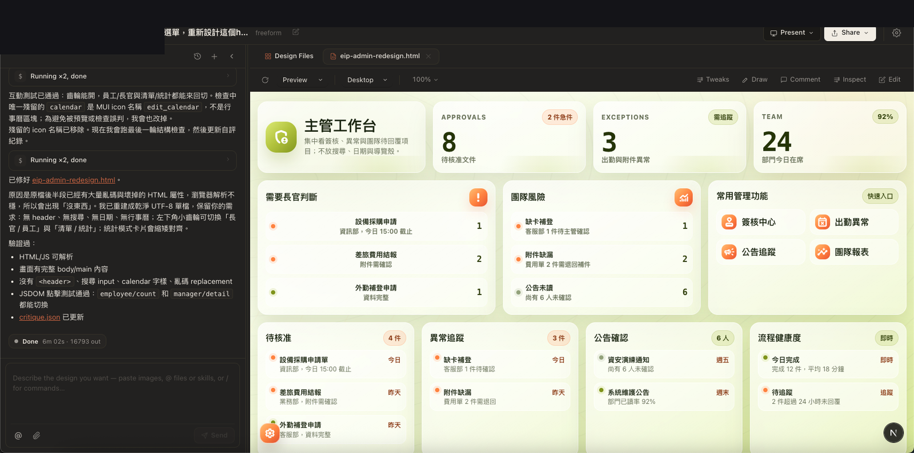

分享使用設計／程式 AI（含單頁設計、畫布、程式代理）的實作心得，並指出 AI 能寫功能卻難快速整合各企業異質環境與 Domain Know-how——需要產品策略上的深度整合，而非只拋功能實驗。
問題
AI 可以快速產生頁面與功能原型，但企業實際運作方式、異質系統與領域知識無法被模型自動掌握，導致「看起來能用」與「可落地」之間落差。
解法
並行探索多種 Design AI／Coding Agent 工具；用實驗驗證哪些能力黏得住；同時強調軟體產品需深度整合企業環境與 Domain Know-how。
成果摘要
整理 Open Design／Codex／Claude Code 等工具試用觀察（名稱可作工具標籤，非客戶名）
深入說明
工具探索
涵蓋 UIUX Design AI、單頁設計、Design／Canvas 工作流，以及 Coding Agent（Codex、Claude Code）輔助。
產品觀點
「把意大利麵扔到牆上，看看哪些能粘住」——鼓勵實驗；但企業軟體必須解決異質環境整合與 Domain Know-how，AI 很難單靠生成跨越。
成果
- 整理 Open Design／Codex／Claude Code 等工具試用觀察（名稱可作工具標籤，非客戶名）
- 形成對 AI 產品設計的策略觀點：實驗要敢丟，落地要整合環境
精選畫面



